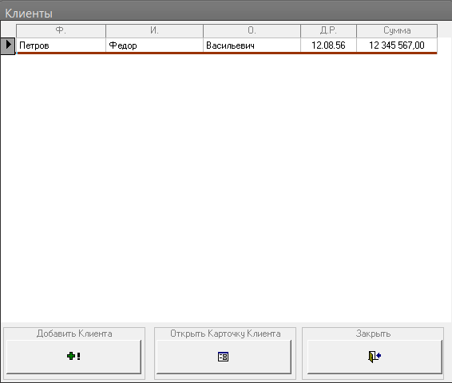
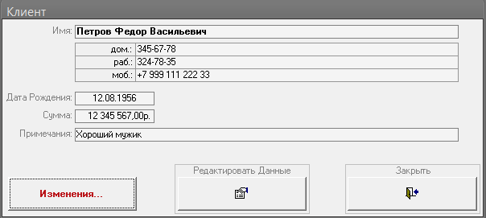
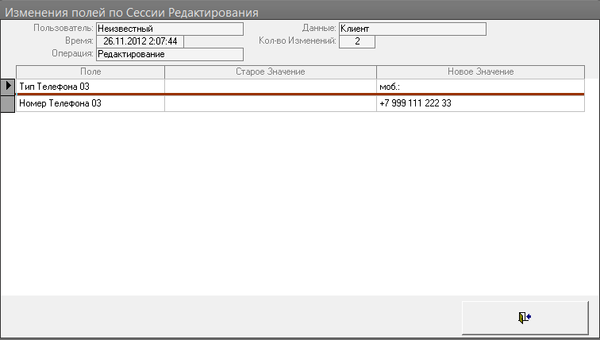

Как все устроено:
Данные об изменениях данных заносятся в две табицы:
1. chSessions - таблица сессий с данными по каждой сессии открытия данных на редакцию (Кто, Когда, какие данные открыл и т.д.)
2. chSessionsLog - подробности по каждой сессии,
связана с таблицей сессий. Содержит данные о том какие поля были
изменены + старое и новое значения каждого поля.
Подробности см. в модуле modChangesLog который содержит все необходимое.

Подробности о изменениях данных конкретного клиента можно посмотреть нажав кнопку в карточке клиента.

После нажатия на кнопку "Изменения" видно: Был указан мобильный телефон.

В примере Пользователь всегда = "Неизвестный", но все готово к приему этих данных. Так-же все готово для вывода боле "широких отчетов" о изменениях и удалениях (см таблицы).

MSA-2000 ( 74 kB)